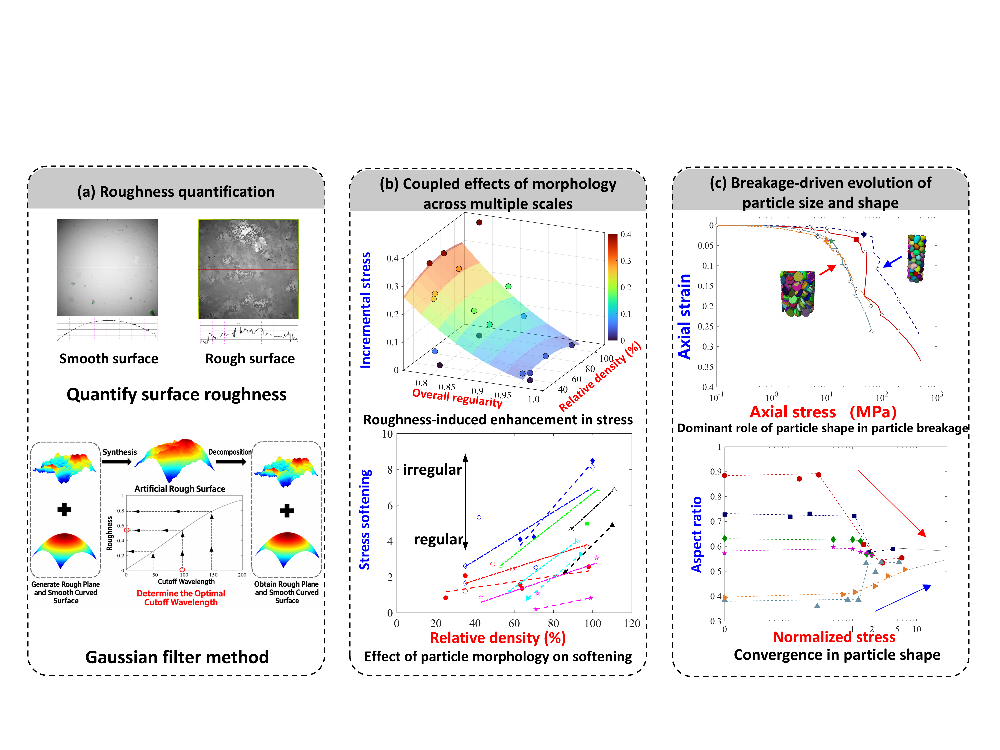
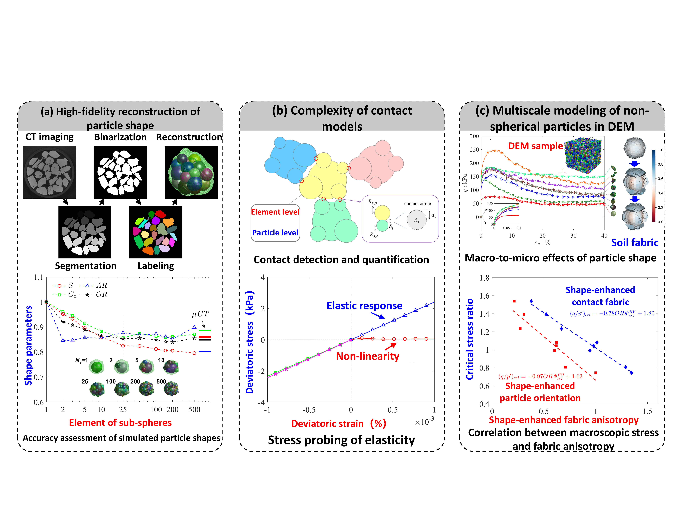
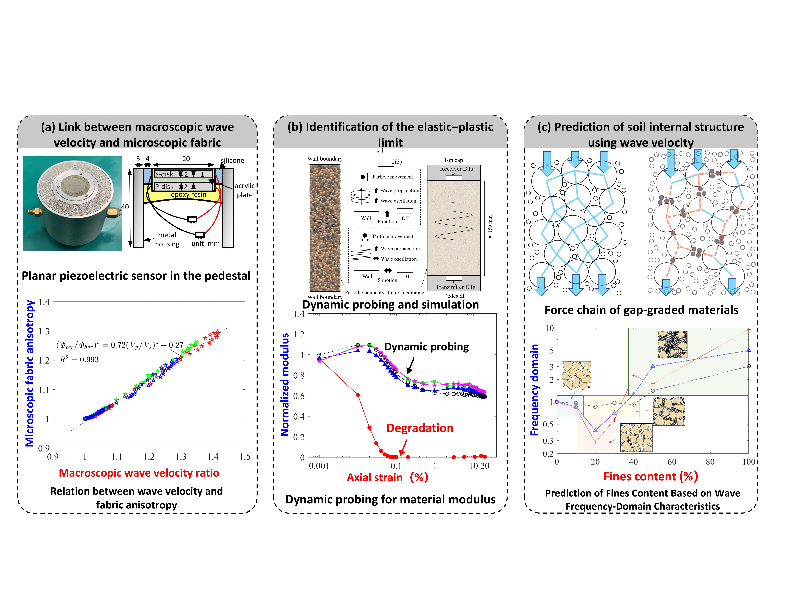

RESEARCH
Granular mechanics across scales.
My research focuses on the multiscale mechanics of granular materials, combining advanced experiments, image-based characterization, numerical modeling, and data-driven approaches.
Particle morphology and breakage across scales
Investigate how particle shape, surface roughness, and grain fragmentation evolve under loading and how these particle-scale characteristics control strength, dilatancy, softening, and crushing behavior. Advanced labolatory testing enhanced by digital and acoustic technique is employed to connect morphology evolution with the macroscopic response of granular materials.
Selected publications
- Li, Y., Singh, S., Buscarnera, G. (2025) X-ray microtomography measurements of coevolving particle size and shape. Journal of Geotechnical and Geoenvironmental Engineering, 151(10), 04025110.
- Li, Y.*., Otsubo, M., Liu, J., Kuwano, R. (2024) Effect of particle morphology on stress and strain characteristics of granular materials during triaxial compression. Acta Geotechnica, 19, 2753–2773.
- Li, Y.*, Otsubo, M., Kuwano, R., Nadimi, S. (2021). Quantitative evaluation of surface roughness for granular materials using Gaussian filter method. Powder Technology, 388, 251-260.

Image-informed modeling and multiscale granular mechanics
Develop and apply DEM-based numerical methods to simulate realistic particle geometries, quantify complex contact interactions, and reveal the links between particle-scale fabric and macroscopic mechanical behavior. Particular attention is given to contact modeling, elastic response, localization, and anisotropy.
Selected publications
- Li, Y., Otsubo, M., Vasileios, A., Kuwano, R., Nadimi, S. (2025) Exploring the micro-to-macro response of granular soils with real particle shapes by way of µCT-aided DEM analyses. Géotechnique, 75 (13): 54–67.
- Otsubo, M., Li, Y., Kuwano, R., Nadimi, S., Angelidakis, V. (2025) Contact-scale insights into G0 development of non-spherical particle assembly. Géotechnique, 75(11), 1445-1456.
- Li, Y.*, Otsubo, M., Kuwano, R. (2022) Interpretation of static and dynamic Young’s modulus and Poisson’s ratio of granular assemblies under shearing. Computers and Geotechnics, 142:104560.

Wave-based monitoring of soil structure and mechanical state
Use elastic-wave measurements as a non-destructive probe of granular materials. Link wave velocity to internal fabric, stiffness degradation, the elastic–plastic limit, with the goal of predicting hidden material states.
Selected publications
- Li, Y.*, Otsubo, M., Kuwano, R. (2024) Elastic waves during continuous triaxial shearing influenced by particle morphology. Soils and Foundations, 64(2), 101443.
- Li, Y.*, Otsubo, M., Kuwano, R. (2023) Evaluation of soil fabric using elastic waves during loadunload. Journal of Rock Mechanics and Geotechnical Engineering, 15(10), 2687–2700.
- Li, Y., Otsubo, M., Ghaemi, A., Dutta, T., Kuwano, R. (2022). Transition of gap-graded soil fabric – shear wave measurements and dispersion relation. Soils and Foundations, 62(1), 101092.
